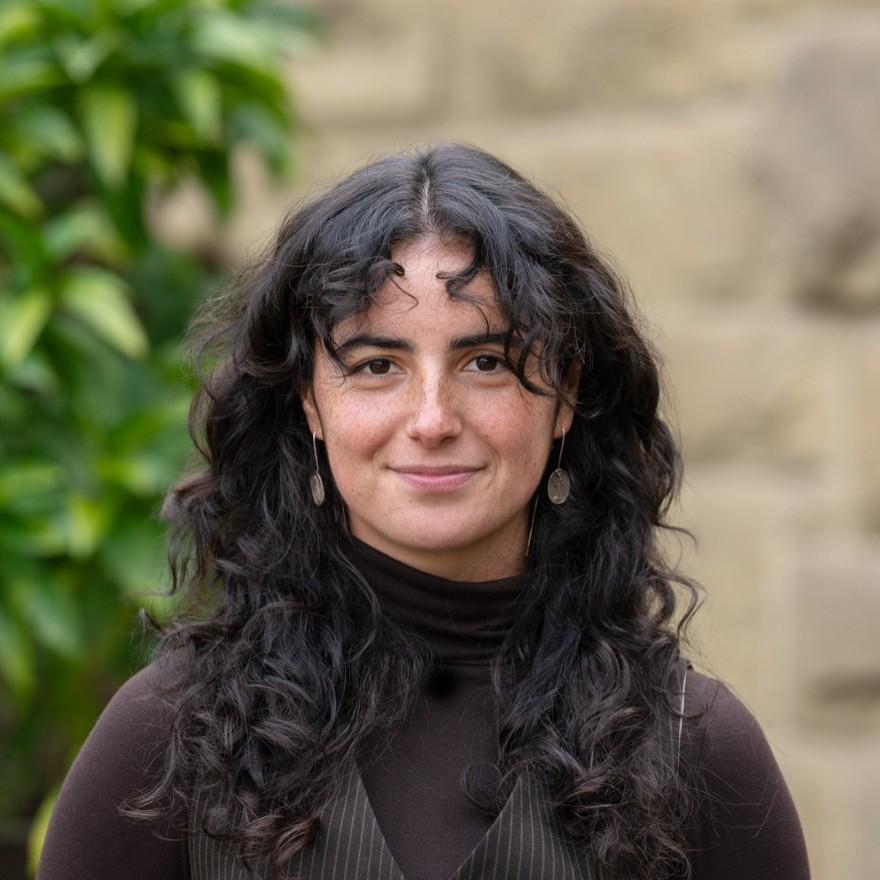

Portfolio
My name is Olivia Velten-Lomelín, and I am a second-year Master's student at Stanford University studying Mechanical Engineering with a focus on Ocean Robotics. I graduated from MIT in June of 2025 with a Bachelor of Science in Mechanical Engineering. My interests lie in robotic applications to improve our oceans and environment.
In addition to the core curriculum of my degree, my studies have primarily been focused on control design and its applications. However, my professional experience in labs and internships has mostly involved mechanical design, materials research, and small-scale manufacturing.
Welcome to my portfolio -- please feel free to contact me with any questions or comments.
